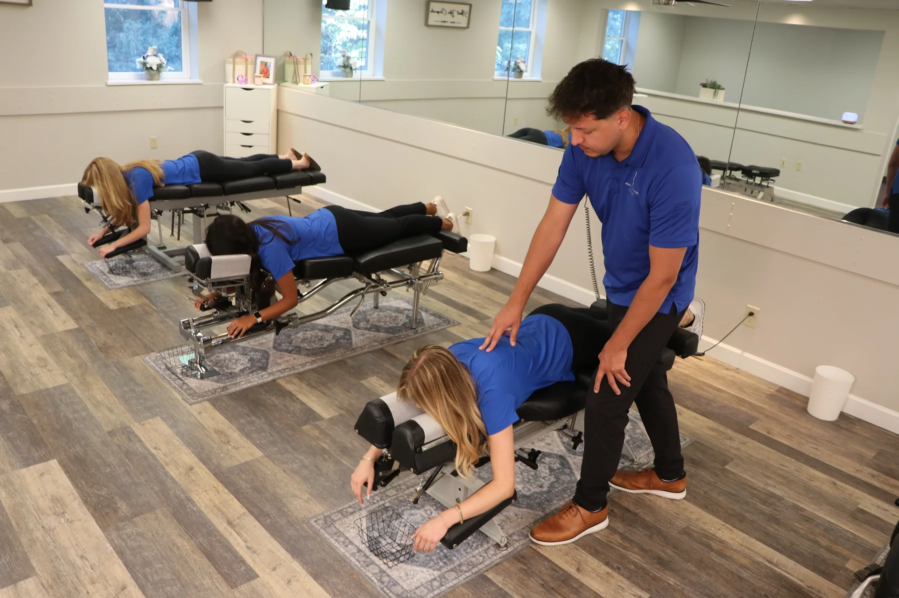
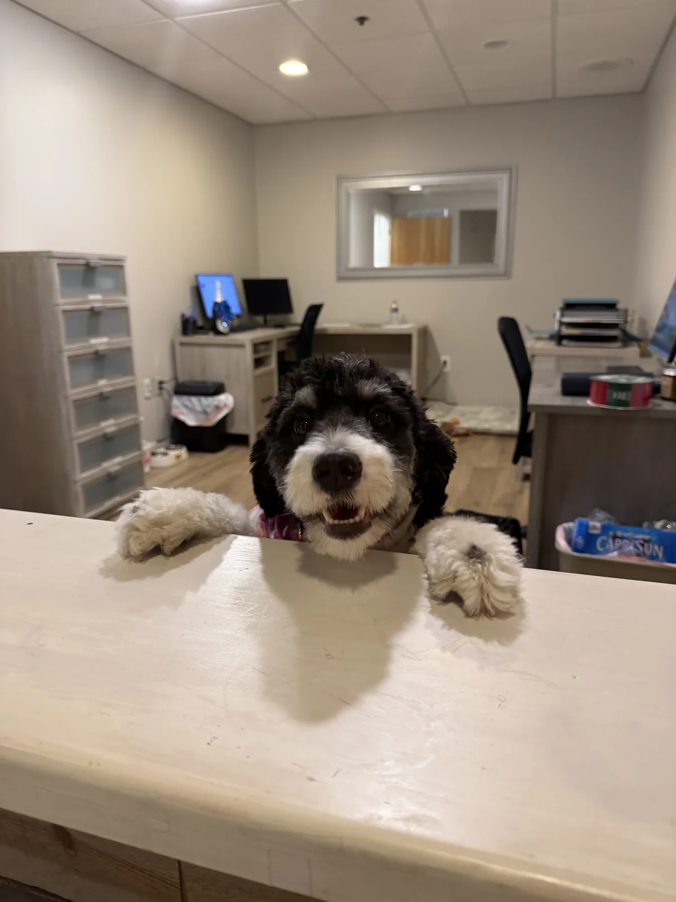

Manual Hands-On Adjusting
Traditional hands-on methods used when appropriate for your findings and comfort.
Dr. Peter selects from hands-on, instrument-assisted, drop-table, upper cervical, and low-force approaches based on your findings and comfort.

Different bodies and life stages call for different approaches.
Technique is selected from your examination, history, health, goals, and preferences.
Your comfort preferences and past experiences always matter.

These are approaches Dr. Peter may consider after listening and examining.
Traditional hands-on methods used when appropriate for your findings and comfort.
Specialized table sections gently drop during an adjustment, helping reduce the amount of force needed.
Handheld instruments such as Activator provide a controlled, targeted, low-force adjustment.
Focused upper-neck methods selected when findings support them.
Gonstead principles may guide examination, positioning, and specific adjustments.
Controlled impulses provide a gentle, gradual option.
A gentler option for infants, pregnancy, older adults, low bone density, or personal preference.
Technique and positioning adapt to each child’s development.
Explore pediatric care →Specialized tables and positioning support pregnancy comfort.
Explore prenatal care →Some adjustments create an audible release and others do not. Sound does not determine effectiveness.
Share your preferences. Dr. Peter explains and adapts the approach as needed.
Yes. Hands-on adjustments are available when appropriate for your findings and comfort.
Yes. Low-force, drop-table, and instrument-assisted options offer gentler approaches.
No. Some adjustments create an audible release and others do not. The sound is not the goal and is not the only way to judge an adjustment.
Absolutely. Your preferences are considered alongside examination findings and safety.
No. Technique and force adapt to your child’s age, development, and comfort.
Yes. Dr. Peter adapts positioning and techniques for each stage of pregnancy and uses specialized tables designed for comfort.
History, findings, bone density, and safety considerations guide every recommendation.
Yes. You can expect a clear explanation and an opportunity to ask questions or discuss your comfort before moving forward.
Begin with a thorough conversation and personalized evaluation.